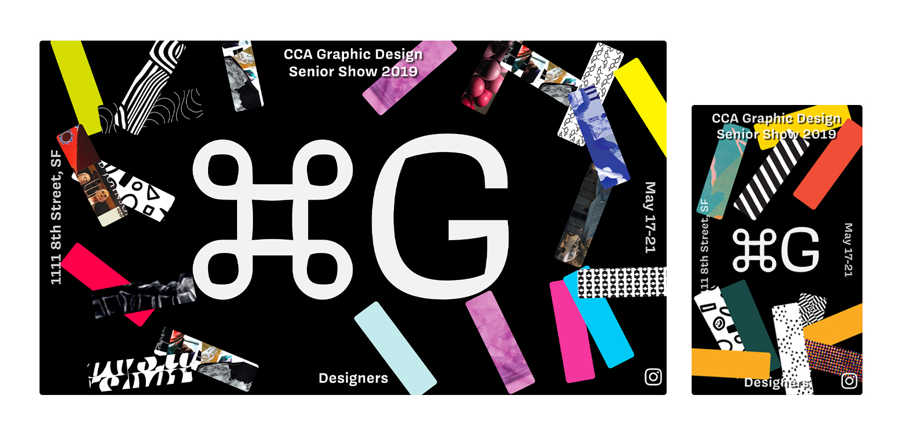
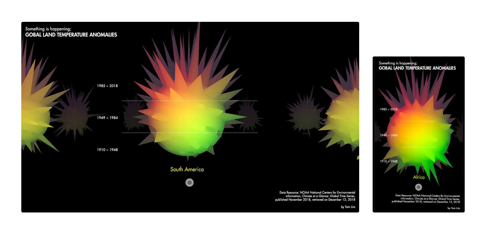
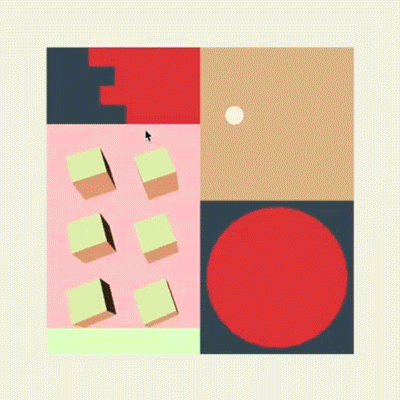
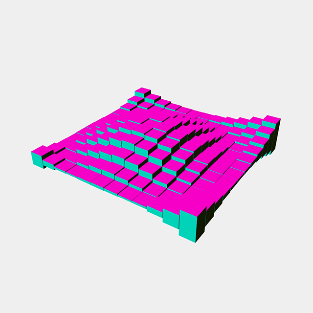
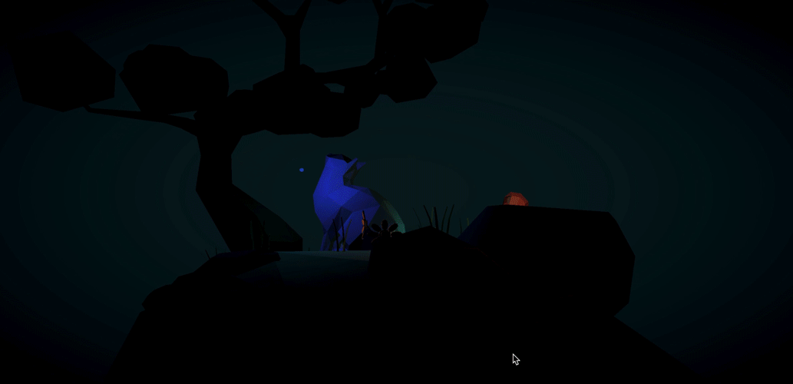
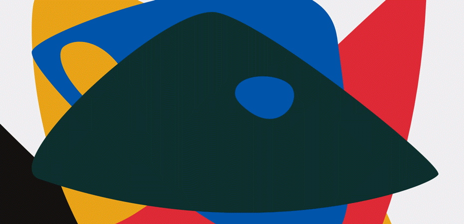
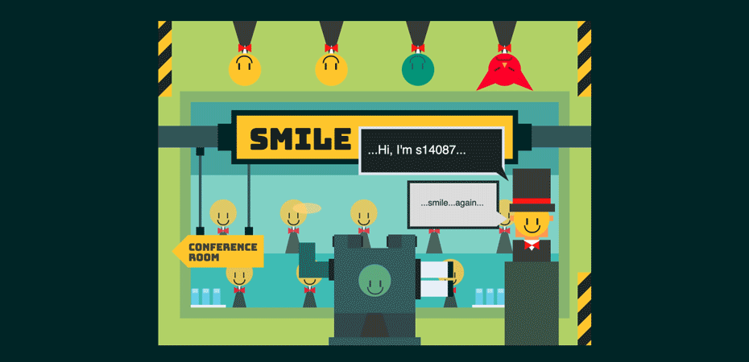

Junkyard
Hand-coded websites and interaction experiments
Web · Creative coding · JavaScript / HTML / CSS
Overview
A collection of websites and interaction experiments I coded by hand, exploring event promotion, data visualization, 3D scenes, and animation on the web.
Command G
A promotional website for CCA Graphic Design Senior Show 2019, designed for desktop and mobile.
p5.js · jQuery

Something is happening
A data visualization based on NOAA climate data. Drag or swipe to rotate the 3D graphs.
Three.js · jQuery

Undertale
An experiment with shapes and sound that responds to pointer movement and clicks.
p5.js

Waving Cube
A web animation that creates waves by varying the height of an array of cubes.
Three.js

Bluecat
A Blender scene rendered on the web, with a view that responds to pointer movement.
Three.js · Blender

Alexander Calder
A web interaction study that uses horizontal scrolling to explore artwork and exhibition information.
JavaScript

Smile Factory
An animated factory scene built in HTML and CSS, with click interactions.
HTML / CSS · jQuery
